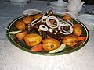

Kazan Kabob

Tasty dish of Uzbek cuisine
The name of this dish can be translated as "kebab in a cauldron." If you do not have the opportunity to go into
nature,
then cook the meat at home.
You will be surprised, but it will turn out no less tasty and fragrant.
Ingredients
- 500g mutton brisket
- 700g medium potatoes
- 1 onion (for serving)
- ½ tsp cumin
- ½ tsp coriander
- ½ tsp dried basil
- salt to taste
- black pepper to taste
- hot pepper to taste
- sunflower oil or mutton flat for frying
Steps
-
- Cut mutton brisket into steaks.
- Marinate the meat in spices without salt for at least 20 mins. If you marinate longer, put the meat
in the refrigerator.
-
- Fry the meat until golden brown all over in well-heated oil.
- Salt, and remove with a slotted spoon, and set aside.
-
- While the meat is cooking peel the potatoes.
- Then fry them in the same oil until golden and salt during the preparation.
-
- Return the meat, cover and cook for 20-30 mins over a low heat.
- If it is necessary add 50ml of water.
- Serve kazob-kabob with fresh vegetables and always with washed onion.
back to main